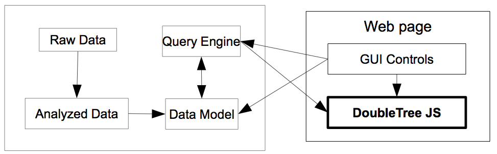

This work is licensed under a
Creative Commons Attribution-NonCommercial-ShareAlike 3.0 Unported License.
This is a guide for how to develop new applications using DoubleTreeJS.
A DoubleTreeJS application consists of a variety of components, as shown in this schematic system diagram:

The DoubleTreeJS visualization is just one of the components. The sample applications give examples of some of the possibilities for each of the other components, each of which will be covered in turn below.
DoubleTree (and DoubleTreeJS specifically) is meant to visualize sequences of items. While a typical scenario would consist of consecutive tokens of from a text, other types of items are possible, both simple (e.g. POS tags), and complex (e.g. word-lemma-POS-author tuples). DoubleTreeJS does not itself do any analysis of raw data — that is the responsibility of the application (or the user). However, many of the sample applications do allow for the possibility of plain text input, which is then "analyzed" into tokens by splitting on white space. However, most of the sample applications assume that a text has already been analyzed, e.g. with POS tags. The dependency paths sample application does the most analysis, but it takes as its input a file of dependency parses in the CONLL-X format, i.e. a file which itself is the result of significant analysis.
The data model is a representation of the analyzed data. It might be a transformed version of the analyzed data, e.g. eliminating punctuation. Often an application will have its own particular data model, especially when DoubleTreeJS is used in conjunction with another program, e.g. a corpus query engine. In the example for The Sketch Engine (only included in the download), it is The Sketch Engine which provides both the data model and the query engine.
To facilitate creating applications, DoubleTreeJS comes with a basic data model: textmodel.TextHash. TextHash provides a way to read in structured data as well as simple query engine (see below). In addition, TextHash provides the means to filter the data, removing items from consideration based on any test concerning the information in the item that the developer can write. See doubletree-filtered for an example. TextHash can give a list of unique items, used in the examples for the "predictive" selection of items.
TextHash can read structured data, where items are separated by whitespace and "fields" in the item are separated by a delimiter. For example, the sample data included with DoubleTreeJS use forward slash (/) as the delimiter, so the begining of RobinHood_Pyle_tagged.txt is:
THE/DT MERRY/NP ADVENTURES/NP OF/IN ROBIN/NP HOOD/NP
When reading structured data, TextHash must know what the fields in the elements are, as well as the delimiter, so its constructor takes those as arguments. In addition, needs to know which fields are relevant for determining "sameness". For example, we might decide that lemma and POS are relevant for determining "sameness", so that e.g. the verb bank and the noun bank would be kept separate, but the verb banks would be grouped together with the verb banked. One other field-related argument is that indicating which field is the "base", or the fundamental field for the visualization. Finally, TextHash also allows for groups of items to be treated as a unit. For example, we might not want the context to cross a chapter, or even a sentence. In this case, the units must be separated by one or more blank lines. This functionality is used in the dependency paths example, so that path contexts are limited to a single sentence.
A TextHash can be (manually) saved as JSON object, and then restored via fromJSON(). In this way, the text does not have to be analysed when the page loads, but the TextHash is read instead. See the metadata sample for an example of this technique.
We need some way to get information out of the data model so we can visualize it with DoubleTreeJS. This is where the query engine comes in. The query engine can be as simple or as complex as the application requires. The sample example for The Sketch Engine shows how DoubleTreeJS can used as (part of) an interface to a corpus query engine. (A similar approach could work for other corpus query engines; in fact, the original DoubleTree was used as a front end to the Open Corpus Workbench.) These examples show how we can combine the power of a sophisticated query language with the usability of a DoubleTree. (Note that due to CORS, the SketchEngine example needs to be on a SketchEngine server, or have its requests proxied to a SketchEngine server.)
TextHash (see above) provides a simple query engine. It allows both simple and regular expression based queries, using a string representation of the items to query against. It is in the query using getItem() or getItems()that we do the actual filtering of the data. Filters can specify the inclusion or exclusion of elements based on the contents of their fields. Both query functions return results in the form needed by DoubleTreeJS (see below).
DoubleTreeJS consists of two pieces: the visualization itself (doubletree.DoubleTree) and the trie data structure used by the visualization (doubletree.Trie). In addition, applications will also have some kind of data model which provides the data for DoubleTreeJS (see above). Most of the samples included with DoubleTreeJS use the class TextHash as the data source.
doubletree.DoubleTree and doubletree.Trie use the common "chaining" pattern, so that multiple properties can be set in a row. e.g.
dt.init("#doubletree").visWidth(w).prefixesOnRight(false).handlers(handlers) \\
.showTokenExtra(showTokenExtras).sortFun(sortFun).filters(filters);
In addition, CSS classes are used as much as possible for styling various aspects of the DoubleTree. All the relevant classes are in the file doubletree.css, in the same directory as DoubleTreeJs.
The input data consists of three parts, analogous to a keyword in context display:
DoubleTree.setupFromArrays() takes 4 arrays (and some other parameters, see following), corresponding to the prefixes, the hits, the suffixes, and the ids of the hits, where element i of the hits array has element i of the prefix array as its prefix, element i of the suffix array as its suffix, and element i of the ids array as its id. DoubleTree internally constructs a doubletree.Trie and then creates the visualization.
Each element in the hits, prefixes and suffixes consists of a string with various fields, delimited by a delimiter (e.g. the samples use "/" as the delimiter). These fields need to be given names via the fieldNames parameter of DoubleTree.setupFromArrays(). We also need to specify whether the primary field (typically a token) is to be treated case sensitively. However, not all of these fields will necessarily be relevant for determining which elements are to be treated alike. We thus need to specify which fields are relevant via the distinguishingFields parameter. And of course, we need to specify what the delimiter is, via the fieldDelim parameter.
Not surprisingly, these are the same parameters that TextHash uses...
While DoubleTree can work with these arrays of hits, prefixes and suffixes, it can also directly load doubletree.Tries that have been created elsewhere, via DoubleTree.setupFromTries(), which takes two doubletree.Tries, one for the left side of the DoubleTree and one for the right side. Note that doubletree.Trie is a specialized trie, and doubletree.DoubleTree.setupFromTries() will work only with instances of doubletree.Trie, not with other types of tries.
Since doubletree.Trie is the basic datastructure, it needs to know all the information about the elements and their fields, so its constructor takes all four types of information as its parameters: caseSensitive, fldNames, fldDelim, distinguishingFldsArray. In addition, doubletree.Trie has serialize() and deserialize() functions to help with working with doubletree.Tries external to DoubleTree.
doubletree.DoubleTree is created with a 0 argument constructor:
dt = new doubletree.DoubleTree();
It is given the data either with DoubleTree.setupFromArrays() or DoubleTree.setupFromTries() as discussed above. The basic DoubleTree provides the ability to expand and collapse nodes by clicking on them, as well as highlighting the nodes that correspond to prefixes and suffixes of the node just clicked. Highlighting is customizable via DoubleTree.basicStyles().
Note: the canvg library used to create images from the DoubleTrees in some of the examples does not respect external CSS styles. This is why the basic styles are not set via CSS but rather in the javascript.
It is also possible to search the nodes in a DoubleTree, using DoubleTree.search(), which takes a regular expression string argument. Nodes that match the search term are given the "foundText" CSS class. The search can be cleared using DoubleTree.clearSearch(), which removes all the "foundText" classes. Note that the user interface for searching and clearing is NOT part of the DoubleTreeJS library — you will need to create that yourself in your application.
Each node of a DoubleTree contains an "info" object, which is simply an object with a variety of properties. These properties include all the fields of the element, as well as information about the "count" and the "continuations". This info object is used by the various interaction handlers as well as in sorting and filtering.
You can customize what appears on each node via a function which gets the info object of the current node as its argument. This node text function is set via DoubleTree.nodeText(). Here is example that shows the "lemma" field followed by the "count" field in parentheses:
function(info) {
return info["lemma"] + " (" + info.count + ")";
}
In addition to the basic information for the node, you may want to be able to toggle display of "extra" information. You can do this via "tokenExtras". As with the node text, the content is defined by a function which gets the info object of the current node as its argument. This function is set via DoubleTree.tokenExtraText(). Toggling of the token extras is done via DoubleTree.showTokenExtra().
It is also possible to provide a colored rectangle, with or without colored borders for each node. The colors and the presence or absence of a border can all be used to encode information, as in the metadata sample. The colors of the rectangles and their borders are determined by two functions, set via DoubleTree.rectColor() and DoubleTree.rectBorderColor(). The two functions are independent, and each gets the info object of the current node as its argument, and they must return a CSS color as a string. Here is an example of a border color function from the metadata sample.
//we put a gray border around lemmas that occur in all 3 sources, and no border on anything else
var borderColor = function(info) {
var defaultC = "rgba(255,255,255,0)"; //transparent white
if (info["source"].length == 3) {
return "rgba(64,64,64,0.5)"; //transparent gray
}
return defaultC;
}
The branches of the DoubleTree can be sorted by any function of the information in the info objects. The sort function is set via DoubleTree.sortFun(), and it gets the info object of the current node as its argument. Here is an example of a sorting function, the built-in doubletree.sortByCount():
doubletree.sortByCount = function() {
return function(a,b) {
return b.info.count - a.info.count;
}
}
Note that the branches are sorted in ascending order (according to the sortFun). You also need to explicitly redraw() the visualization to update the display.
We can also limit which branches are shown, via filtering functions. Note: These filters are NOT the filters in TextHash, which filter the data. These filters only affect what is shown in the DoubleTree. As with sorting functions, the filtering functions also get the info object of the current node as their argument. The left and right sides of the DoubleTree have their own filtering functions, and each level of a side has its own filtering function. The filters are specified via an object with "left" and "right" keys, each of which takes an array of functions. Element i of the array filters the i+1 position of the side. So filters.left[1] will filter the prefix second element(s) from the root.
Filters are set via DoubleTree.filters(). Note that you need to explicitly redraw() the visualization to update the display.
In addition to the expanding/collapsing of nodes, DoubleTree also provides two hooks for additional interaction, namely for shift-clicking and alt-clicking (Note use AltGr+Alt-click in FireFox for Linux pre-empts alt-click for its own purposes.)
As with the other functions, the shift-click and alt-click handlers get the info object of the current node as their argument. Of course, their effects are not limited to the DoubleTree — many of the examples show a KWIC on shift-click. The handlers are specified using DoubleTree.handlers(), which takes an object that has "shift" and "alt" keys, which take functions as their values.
Note that the functionality in the examples of alt-clicking to reset the root is NOT a built-in part of DoubleTreeJS, since it requires getting the new data from the external data source.